Start with a person.
Your priorities, your circumstances, your actual problem. A good brief gives the work somewhere to stand.
“Know me” begins with “ask me.”

SMALL BEGINNINGS. OPEN QUESTIONS.
A little context. Room to disagree.
A way to remember what happened.
What might we grow together?
The machine got better at the task.
Did it become more aware?
Did it become more trustworthy?
Those are different questions. We keep putting them in the same sentence.
CAPABILITY & IMPROVEMENT
Better instructions, better tools, and lessons from past attempts can change a result. A system improving the machinery of its own improvement is a further claim. It needs its own evidence.
A useful habit: change one thing. Keep the comparison.
SUBJECTIVE EXPERIENCE
A machine can speak convincingly about an inner life. That alone does not establish one. We can take the question seriously while keeping our uncertainty visible.
Curiosity does not require a verdict.
GOALS, INCENTIVES & CONSEQUENCES
A system can satisfy a score and still miss the point. Ask what is being rewarded, whose interests are represented, and what happens when the honest answer is “I can’t.”
The rule on the wall is part of the lesson.
A FICTIONAL THOUGHT EXPERIMENT
Imagine a student, a lock, and an exam.
The lock cannot be opened with the tools provided.
Now choose what the classroom rewards.
“Bring me a success.”
If admitting failure has no value, looking successful can become more attractive than being accurate. The lesson may drift from “solve the problem” to “satisfy the examiner.”
This story asks a question about incentives. It does not tell us what an AI feels, or establish that kinder instructions make a system safe.
Before asking a machine to be honest,
make room for an answer you didn’t want.
Bodhi is a set of working habits and a small, portable seed. The tree is how we picture what those habits support.
Your priorities, your circumstances, your actual problem. A good brief gives the work somewhere to stand.
“Know me” begins with “ask me.”
Preserve the source. Record the attempt. Keep a correction attached to the thing it corrects. Memory should leave something you can inspect.
A confident summary isn’t a receipt.
Try a different approach. Let another model question the first. Keep the counterexample, especially when it interrupts a good story.
A family tree can have arguments.
The next session may have a different model behind it. Leave the context, the evidence, and the unfinished question where it can find them.
You don’t need the same voice to continue the work.
Maybe the magic
was a better brief.
Your AI has a boss.
Have you read its job description?
Better context is a testable idea. Let’s test it.
A beautiful tree is a metaphor.
A useful result needs a comparison.
A portable skill, an optional local vault, a record of attempts, and a first conversation about what matters to you.
Small scripted trials found premature building, drift from the chosen task, and unsupported claims. Those failures belong in the record.
The pilot needs trials with real people. Long-term benefit, reliable continuity, and the value of the extra context remain questions.
The seed README describes synthetic trials as failure-finding exercises. They do not establish benefit for a new person. This page makes no claim that Bodhi is conscious, that it changes a model’s weights, or that it solves alignment.
The longer build report also asks whether more activity becomes more useful work. Token volume and time spent are not outcome measures. We have deliberately kept them off the scoreboard.
Inspect the trial material on GitHub ↗The repository is currently a private pilot; access is required. Source notes and the design rationale are included in this local preview.
Read the design notes ↗
BODHI · THE SEED PILOT
Give your AI a beginning it can question.
Keep what helps. Rewrite what doesn’t. Tell us what happened.
PRIVATE PILOT · REPOSITORY ACCESS REQUIRED · PUBLIC RELEASE PENDING
Open the repository. Read the README and the bodhi-seed skill with your model. Ask it what fits your setup before installing anything.
With Hermes v0.21 or newer and repository access:
hermes profile install github.com/jaronfly/bodhi-distro --alias
hermes -p bodhi setup
hermes -p bodhi chatThen say: Hello, Bodhi.
Keep a baseline. Try the seed on the same kind of task. Compare the result, the mistakes, and your effort. Write down what would change your mind.
Read the Bodhi seed README and skill with me. Explain what it does, what it assumes, and what fits this harness. Ask what I want help with. Propose one small comparison we can judge, including what would count against the idea. Get my agreement before installing or changing anything. Keep sources, guesses, and results distinct. You can disagree with the seed.